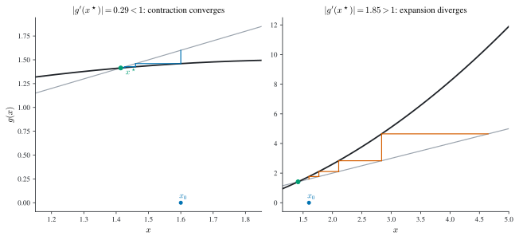
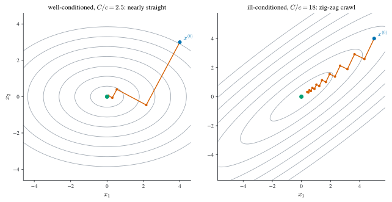
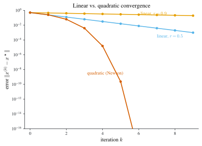
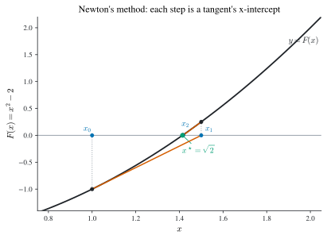

8 Nonlinear Equations & Optimization
\[ \newcommand{\R}{\mathbb{R}} \newcommand{\C}{\mathbb{C}} \newcommand{\N}{\mathbb{N}} \newcommand{\E}{\mathbb{E}} \newcommand{\eps}{\varepsilon} \newcommand{\abs}[1]{\left\lvert #1 \right\rvert} \newcommand{\norm}[1]{\left\lVert #1 \right\rVert} \newcommand{\ninf}[1]{\left\lVert #1 \right\rVert_{\infty}} \newcommand{\ntwo}[1]{\left\lVert #1 \right\rVert_{2}} \newcommand{\none}[1]{\left\lVert #1 \right\rVert_{1}} \newcommand{\inner}[2]{\left\langle #1,\, #2 \right\rangle} \newcommand{\bigO}{\mathcal{O}} \newcommand{\dd}{\mathrm{d}} \newcommand{\diff}[2]{\frac{\mathrm{d} #1}{\mathrm{d} #2}} \newcommand{\pdiff}[2]{\frac{\partial #1}{\partial #2}} \newcommand{\spec}{\rho} \newcommand{\cond}{\kappa} \newcommand{\Span}{\operatorname{span}} \newcommand{\rank}{\operatorname{rank}} \newcommand{\tr}{\operatorname{tr}} \newcommand{\diag}{\operatorname{diag}} \newcommand{\argmax}{\operatorname*{arg\,max}} \newcommand{\argmin}{\operatorname*{arg\,min}} \newcommand{\defeq}{:=} \]
For a nonlinear system, iteration starts from a guess and applies an update until it converges. Linear solves from Chapter 4 and Chapter 5 enter each Newton step.
Here order means order of convergence as the iteration count grows, distinct from the order of accuracy \(\bigO(h^p)\) as the mesh size shrinks (Chapter 2; Notation).
8.1 General nonlinear equations
The problem of the chapter is to solve a system of \(n\) nonlinear equations in \(n\) unknowns, \[ F(x)=0,\qquad F:\R^n\to\R^n . \tag{8.1}\] Stacking the scalar coordinate functions \(f_i:\R^n\to\R\), \[ F(x)=\begin{pmatrix} f_1(x)\\ \vdots\\ f_n(x)\end{pmatrix}, \] turns Equation 8.1 into the simultaneous conditions \(f_1(x)=\dots=f_n(x)=0\). The contrast with \(Ax=b\) is sharp: a nonlinear system may have no solution, one, or many, and no direct method returns them. So we settle for iterative methods that, launched from an initial guess, home in on some solution, usually the one nearest the guess, when one exists.
Linear systems have \(F(x)=Ax-b\). Newton’s method solves a new linear system at every step, using, for example, LU factorization (Chapter 4). For optimization, a critical point of \(u:\R^n\to\R\) solves \(F=\nabla u=0\). The gradient-descent bounds (Section 8.2.4) require uniform positive lower and finite upper bounds on the Hessian eigenvalues.
The same equation Equation 8.1 also governs implicit time-stepping for stiff ODEs (Chapter 3) and discretized nonlinear PDEs, among much else; the two methods below serve all of these.
8.2 Linearly convergent iterations
A linearly convergent iteration contracts the error by a constant factor below \(1\). This is the \(q=1\) case of Section 8.3.1.
From roots to fixed points
Definition 8.1 (Fixed point) Given \(g:\R^n\to\R^n\), a point \(x\) is a fixed point of \(g\) if \(g(x)=x\).
Fixed-point iteration rewrites the root problem \(F(x)=0\) as a fixed-point problem \(g(x)=x\) with the same solution set, and then iterates the map \(g\). To construct \(g\), choose any scalar \(\eps\neq0\) and define \[ g(x)\defeq x-\eps\,F(x). \tag{8.2}\] The chain of equivalences \[ g(x)=x\iff x-\eps F(x)=x\iff \eps F(x)=0\iff F(x)=0 \] shows that every nonzero \(\eps\) gives the same fixed points, while convergence depends on its value.
Fixed-point iteration is the sequence obtained by feeding each output back in as the next input, \[ x^{(k+1)}=g(x^{(k)}),\qquad k=0,1,2,\dots, \tag{8.3}\] from a guess \(x^{(0)}\in\R^n\); equivalently \(x^{(k)}=\underbrace{g\circ\cdots\circ g}_{k\text{ times}}(x^{(0)})\).
Proposition 8.1 (Limits of fixed-point iteration are fixed points) If \(g\) is continuous and the iterates Equation 8.3 satisfy \(x^{(k)}\to x\), then \(x\) is a fixed point of \(g\).
Proof. Let \(k\to\infty\) in \(x^{(k+1)}=g(x^{(k)})\). A sequence and its shift share a limit, so the left side tends to \(x\); continuity sends the right side to \(g(x)\). Hence \(x=g(x)\). \(\square\)
For an example of both outcomes under Equation 8.2, take the scalar \(F(x)=x^2-2\), whose positive root is \(x^\star=\sqrt2\approx1.41421\), and iterate \(g(x)=x-\eps F(x)\) from the same guess \(x^{(0)}=1.6\) for two choices of \(\eps\). The slope of \(g\) at the root, \(g'(x^\star)=1-\eps F'(x^\star)=1-2\sqrt2\,\eps\), decides everything: \(\eps=0.25\) gives \(g'(x^\star)\approx0.29\) (magnitude below \(1\)) and the iterates march into the root, while \(\eps=-0.30\) gives \(g'(x^\star)\approx1.85\) (magnitude above \(1\)) and they are thrown off to infinity, as Table 8.1 shows.
| \(k\) | \(x^{(k)}\), \(\eps=0.25\) (converges) | \(x^{(k)}\), \(\eps=-0.30\) (diverges) |
|---|---|---|
| \(0\) | \(1.6\) | \(1.6\) |
| \(1\) | \(1.46\) | \(1.768\) |
| \(2\) | \(1.4271\) | \(2.10575\) |
| \(3\) | \(1.41795\) | \(2.83601\) |
| \(4\) | \(1.41530\) | \(4.64886\) |

When does the iteration converge? The Banach theorem
Fix a vector norm \(\norm{\cdot}\) on \(\R^n\) and use the same notation for its induced operator norm on \(\R^{n\times n}\).
Definition 8.2 (Contraction map) A map \(g:\R^n\to\R^n\) is a contraction with parameter \(r\in[0,1)\) if \[ \norm{g(x)-g(y)}\le r\,\norm{x-y}\qquad\text{for all }x,y\in\R^n . \tag{8.4}\]
A sequence \(\{x^{(k)}\}\) is Cauchy if, for every \(\eps>0\), there is \(K\) such that \(\norm{x^{(k)}-x^{(l)}}\le\eps\) whenever \(k,l\ge K\). Under any norm, \(\R^n\) is complete: every Cauchy sequence converges.
Theorem 8.1 (Banach fixed-point theorem) Suppose \(g:\R^n\to\R^n\) is a contraction with parameter \(r\in[0,1)\). Let \(x^{(0)}\in\R^n\) and set \(x^{(k+1)}=g(x^{(k)})\) for \(k=0,1,2,\dots\). Then:
- the sequence converges, \(x^{(k)}\to x^\star\) for some \(x^\star\in\R^n\);
- \(x^\star\) is the unique fixed point of \(g\) in \(\R^n\); and
- the error obeys \[ \norm{x^{(k)}-x^\star}\le\frac{r^k}{1-r}\,\norm{x^{(1)}-x^{(0)}}. \tag{8.5}\]
Proof. Step 1: the iterates are Cauchy. For \(k\le l\), telescoping and the triangle inequality give \[ \norm{x^{(k)}-x^{(l)}}=\Bigl\|\textstyle\sum_{i=k}^{l-1}\bigl(x^{(i)}-x^{(i+1)}\bigr)\Bigr\| \le\sum_{i=k}^{l-1}\norm{x^{(i)}-x^{(i+1)}}. \] Each summand shrinks geometrically. First, the \(j\)-fold composite \(g^{j}\) is itself a contraction with parameter \(r^{j}\): by induction, for \(j\ge1\), \[ \norm{g^{j}(x)-g^{j}(y)}=\norm{g\bigl(g^{j-1}(x)\bigr)-g\bigl(g^{j-1}(y)\bigr)} \le r\,\norm{g^{j-1}(x)-g^{j-1}(y)}\le\cdots\le r^{j}\norm{x-y}. \] Since \(x^{(i)}=g^{i}(x^{(0)})\) and \(x^{(i+1)}=g^{i}(x^{(1)})\), \[ \norm{x^{(i)}-x^{(i+1)}}=\norm{g^{i}(x^{(0)})-g^{i}(x^{(1)})}\le r^{i}\norm{x^{(0)}-x^{(1)}}. \] Summing the geometric series and extending it to infinity, \[ \norm{x^{(k)}-x^{(l)}}\le\Bigl(\sum_{i=k}^{l-1}r^{i}\Bigr)\norm{x^{(0)}-x^{(1)}} \le\Bigl(\sum_{i=k}^{\infty}r^{i}\Bigr)\norm{x^{(0)}-x^{(1)}} =\frac{r^k}{1-r}\,\norm{x^{(0)}-x^{(1)}}. \tag{$\star$} \] The right side is free of \(l\) and, because \(r\in[0,1)\), tends to \(0\) as \(k\to\infty\); the sequence is Cauchy.
Step 2: convergence, uniqueness, and the bound. Being Cauchy in the complete space \(\R^n\), the sequence has a limit \(x^\star=\lim_k x^{(k)}\). A contraction is continuous, so Proposition 8.1 makes \(x^\star\) a fixed point. It is the only one: two fixed points \(x^\star,y^\star\) would satisfy \(\norm{x^\star-y^\star}=\norm{g(x^\star)-g(y^\star)}\le r\norm{x^\star-y^\star}\), which forces \(\norm{x^\star-y^\star}=0\) since \(r<1\). Finally, hold \(k\) fixed in \((\star)\) and send \(l\to\infty\); continuity of the norm gives \(\norm{x^{(k)}-x^{(l)}}\to\norm{x^{(k)}-x^\star}\), which is Equation 8.5. \(\square\)
The contraction inequality also gives \(\norm{x^{(k+1)}-x^\star}\le r\norm{x^{(k)}-x^\star}\), hence linear convergence (Definition 8.5).
A checkable test via the Jacobian
Definition 8.3 (Jacobian) For a vector field \(g:\R^n\to\R^n\) with coordinate functions \(g_1,\dots,g_n\), the Jacobian \(Dg(x)\) is the \(n\times n\) matrix-valued function \[ [Dg(x)]_{ij}=\pdiff{g_i}{x_j}(x). \]
Theorem 8.2 (Jacobian bound implies contraction) Let \(g:\R^n\to\R^n\) be continuously differentiable. If there is \(r\in[0,1)\) with \(\norm{Dg(x)}\le r\) for all \(x\in\R^n\) (induced norm matching the vector norm), then \(g\) is a contraction with parameter \(r\).
Proof. Fix \(x,y\) and join them by the segment \(z(t)=(1-t)x+ty\), \(t\in[0,1]\), so \(z(0)=x\), \(z(1)=y\), and \(z'(t)=y-x\). The fundamental theorem of calculus and the chain rule give \[ g(y)-g(x)=\int_0^1\diff{}{t}g(z(t))\,\dd t=\int_0^1 Dg(z(t))\,[y-x]\,\dd t. \] Taking norms and passing the triangle inequality through the integral, \[ \norm{g(y)-g(x)}\le\int_0^1\norm{Dg(z(t))\,[y-x]}\,\dd t \le\int_0^1\norm{Dg(z(t))}\,\norm{y-x}\,\dd t \le\int_0^1 r\,\norm{y-x}\,\dd t=r\,\norm{y-x}, \] using \(\norm{Mv}\le\norm{M}\norm{v}\) and the hypothesis \(\norm{Dg(z(t))}\le r\) along the segment. \(\square\)
For stationary iterations, \(g(x)=Tx+c\) has \(Dg=T\); compare the spectral-radius criterion \(\spec(T)<1\) in Theorem 7.1 (Definition 6.4).
Gradient descent as a contraction
Return to minimizing \(u:\R^n\to\R\), i.e. solving \(F(x)=\nabla u(x)=0\). Specializing the fixed-point map Equation 8.2 to \(F=\nabla u\) and renaming the scalar \(t>0\) (a step size) gives the update \[ x^{(k+1)}=x^{(k)}-t\,\nabla u(x^{(k)}), \tag{8.6}\] which is gradient descent.
Definition 8.4 (Strictly convex function) A function \(u:\R^n\to\R\) is strictly convex if, for distinct \(x,y\) and \(0<\tau<1\), \[ u\bigl((1-\tau)x+\tau y\bigr)<(1-\tau)u(x)+\tau u(y). \]
For \(u\in C^2\), a positive-definite Hessian everywhere is sufficient for strict convexity. It is not necessary: \(u(x)=x^4\) is strictly convex but \(u''(0)=0\). Any critical point of a differentiable strictly convex function is its unique global minimizer. For a convergence rate we impose uniform two-sided eigenvalue bounds.
There are constants \(0<c\le C\) with the eigenvalues of \(\nabla^2 u(x)\) lying in \([c,C]\) for all \(x\). The lower bound \(c>0\) is strong convexity; the upper bound \(C\) makes \(\nabla u\) Lipschitz. The ratio \(C/c\) bounds the \(2\)-norm condition number \(\cond_2\) (Definition 4.6) of each Hessian and determines the convergence bound below.
Theorem 8.3 (Gradient descent converges linearly) Under the standing assumption, gradient descent Equation 8.6 with step size \(t=1/C\) converges to the unique global minimizer \(x^\star\) of \(u\). Moreover \(g(x)=x-\tfrac1C\nabla u(x)\) is a contraction with parameter \(r=1-c/C\), so the Banach theorem gives \[ \ntwo{x^{(k)}-x^\star}\le\Bigl(1-\frac{c}{C}\Bigr)^{k}\frac{C}{c}\,\ntwo{x^{(1)}-x^{(0)}}. \tag{8.7}\]
Proof. By Theorem 8.2 it is enough to bound \(\ntwo{Dg(x)}\). Differentiating \(g(x)=x-\tfrac1C\nabla u(x)\), \[ Dg(x)=I_n-\frac1C\,\nabla^2 u(x). \] An eigenvalue \(\lambda\) of \(\nabla^2 u(x)\) becomes the eigenvalue \(1-\lambda/C\) of \(Dg(x)\). Since \(c\le\lambda\le C\) gives \(c/C\le\lambda/C\le1\), every eigenvalue of \(Dg(x)\) lies in \([\,0,\,1-c/C\,]\). As \(\nabla^2 u\) is symmetric, so is \(Dg(x)\), and its \(2\)-norm equals its spectral radius (Definition 6.4), \[ \ntwo{Dg(x)}=\spec(Dg(x))=\max_i\abs{\lambda_i(Dg(x))}\le1-\frac{c}{C}, \] the eigenvalues sitting in \([0,1-c/C]\) with \(0\le1-c/C<1\). Thus \(\ntwo{Dg(x)}\le r\) with \(r=1-c/C\in[0,1)\), \(g\) is a contraction, and the Banach theorem applies; Equation 8.7 is Equation 8.5 with \(1/(1-r)=C/c\). \(\square\)
Taking \(t=1/C\) lands every eigenvalue of \(Dg\) in \([0,1-c/C]\), which is convenient but not the fastest constant step allowed by these bounds. The minimax choice \(t=2/(c+C)\) gives the contraction bound \((C-c)/(C+c)\), strictly below \(1-c/C\) when \(c<C\) (for \(C/c=10\), \(0.818\) versus \(0.9\)). On quadratics, the conjugate-gradient error bound (Theorem 8.3) involves the factor \((\sqrt{C/c}-1)/(\sqrt{C/c}+1)\).
For example, minimize the quadratic \[ u(x)=\tfrac12 x^\top A x,\qquad A=\diag(1,10), \] whose gradient is \(\nabla u(x)=Ax=(x_1,\,10x_2)\). The eigenvalues of the (constant) Hessian \(A\) are \(1\) and \(10\), so \(c=1\), \(C=10\), the step is \(t=1/C=0.1\), and the contraction parameter is \(r=1-c/C=0.9\). The update reads \[ x^{(k+1)}=x^{(k)}-0.1\,(x_1^{(k)},\,10x_2^{(k)})=\bigl(0.9\,x_1^{(k)},\,0\bigr), \] because the stiff coordinate has \(1-t\cdot10=0\): one step annihilates it. From \(x^{(0)}=(1,1)\) the soft coordinate then decays by exactly \(0.9\) each step while the stiff one stays pinned at \(0\):
| \(k\) | \(x^{(k)}\) | \(\ntwo{x^{(k)}-x^\star}\) |
|---|---|---|
| \(0\) | \((1,\,1)\) | \(\sqrt2\approx1.414\) |
| \(1\) | \((0.9,\,0)\) | \(0.9\) |
| \(2\) | \((0.81,\,0)\) | \(0.81\) |
| \(3\) | \((0.729,\,0)\) | \(0.729\) |
Here \(x^\star=(0,0)\) and \(\ntwo{x^{(k)}-x^\star}=0.9^k\) for \(k\ge1\). The bound Equation 8.7 is \(0.9^k\cdot10\sqrt{1.01}\approx10.05\cdot0.9^k\), compared with the exact error \(0.9^k\) (Figure 8.3).
An orthogonal rotation preserves these contraction factors. Zig-zagging can occur when the step size and eigenvalues make some components alternate in sign; exact line search can also alternate across a narrow valley (Figure 8.2). Compare conjugate gradient (Theorem 8.3).

8.3 Superlinear iterations: Newton’s method
Orders of convergence
Definition 8.5 (Order of convergence) Let \(E_k=\norm{x^{(k)}-x^\star}\) for a sequence \(x^{(k)}\to x^\star\). It converges with order at least \(q\), \(q\ge1\), if there is \(M>0\) such that \[ E_{k+1}\le M E_k^q \tag{$*$} \] for all sufficiently large \(k\). For \(q=1\) we require \(M<1\) and call the convergence linear; \(q=2\) gives quadratic convergence (or faster).
Superlinear convergence means \(E_{k+1}/E_k\to0\). A fixed order \(q>1\) implies this, since \(E_{k+1}/E_k\le M E_k^{q-1}\to0\). The converse fails: \(E_k=e^{-k^2}\) has \(E_{k+1}/E_k=e^{-2k-1}\to0\), but \(E_{k+1}/E_k^q=e^{(q-1)k^2-2k-1}\to\infty\) for every fixed \(q>1\).
With \(q>1\), the bound \((*)\) decreases the error once \(M E_k^{q-1}<1\); \(M\) itself can exceed \(1\). The next result assumes this fixed-order bound from the starting iterate, which can be obtained by reindexing once the iterates enter the relevant neighborhood.
Theorem 8.4 (A fixed order above one gives a doubly exponential bound) Suppose \((*)\) holds for all \(k\ge0\) with \(q>1\). If \(0<E_0<M^{-1/(q-1)}\), then there are constants \(\alpha,C>0\) with \[ \norm{x^{(k)}-x^\star}\le C\,e^{-\alpha q^{k}} . \tag{8.8}\] One may take \(C=M^{-1/(q-1)}\) and \(\alpha=-\log(M^{1/(q-1)}E_0)>0\). If an iterate reaches \(E_k=0\), the bound \((*)\) keeps every subsequent error at zero.
Proof. Until an error is zero, take logs of \(E_{k+1}\le M E_k^q\) to obtain the linear recursion: \(\log E_{k+1}\le b+q\log E_k\) with \(b=\log M\). Define \(a_0=\log E_0\), \(a_{k+1}=b+q\,a_k\); then \(\log E_k\le a_k\) for all \(k\) by induction (the step is \(\log E_{k+1}\le b+q\log E_k\le b+q a_k=a_{k+1}\)). Solving the recursion, \[ a_k=q^{k}a_0+b\sum_{j=0}^{k-1}q^{j}=q^{k}a_0+b\,\frac{q^{k}-1}{q-1} =q^{k}\Bigl(a_0+\frac{b}{q-1}\Bigr)-\frac{b}{q-1}. \] Put \(\alpha\defeq-\bigl(a_0+\tfrac{b}{q-1}\bigr)\). With \(a_0=\log E_0\) and \(b=\log M\), the condition \(\alpha>0\) is \(\log\!\bigl(E_0 M^{1/(q-1)}\bigr)<0\), i.e. \(E_0<M^{-1/(q-1)}\), the hypothesis. Then \(\log E_k\le a_k=-\alpha q^{k}-\tfrac{b}{q-1}\), and exponentiating gives \(E_k\le C e^{-\alpha q^{k}}\) with \(C=e^{-b/(q-1)}=M^{-1/(q-1)}\). Since \(\alpha>0\) and \(q>1\), the exponent \(-\alpha q^{k}\to-\infty\) and \(E_k\to0\). \(\square\)
Linear convergence adds roughly a fixed number of correct digits per step; quadratic convergence roughly doubles the number (Figure 8.3).

Newton’s method: linearize, then solve
Newton’s method solves the linear approximation to \(F\) at each iterate.
Near \(x^{(k)}\), the first-order multivariate Taylor expansion is \[ F(x)\approx F(x^{(k)})+DF(x^{(k)})\,(x-x^{(k)}), \] with \(DF\) the Jacobian of \(F\) (Definition 8.3, applied to \(F\)). Setting this linear model to zero, \(0=F(x^{(k)})+DF(x^{(k)})(x-x^{(k)})\), and solving for \(x\) (whenever \(DF(x^{(k)})\) is invertible) names the next iterate, Newton’s method: \[ x^{(k+1)}=x^{(k)}-DF(x^{(k)})^{-1}F(x^{(k)}). \tag{8.9}\] For \(n=1\) this is the schoolbook rule \[ x^{(k+1)}=x^{(k)}-\frac{F(x^{(k)})}{F'(x^{(k)})}. \] For the stationarity equation \(F=\nabla u=0\), the Jacobian is \(DF=\nabla^2u\) and the update is \[ x^{(k+1)}=x^{(k)}-\nabla^2 u(x^{(k)})^{-1}\nabla u(x^{(k)}), \] which for \(n=1\) is \(x^{(k+1)}=x^{(k)}-u'(x^{(k)})/u''(x^{(k)})\). Near a critical point with positive-definite Hessian, the local theorem below gives convergence to a strict local minimum. With a different Hessian signature, the same root-finding iteration can converge to a maximum or saddle.

Compute the Newton step by solving \(DF(x^{(k)})y=F(x^{(k)})\) using the methods of Chapter 4, without forming the inverse.
Given \(x^{(0)}\) and a maximum count \(m\) (or a stopping tolerance):
- set \(x\leftarrow x^{(0)}\);
- for \(i=1,\dots,m\) (or until convergence):
- assemble \(A\leftarrow DF(x)\) and \(b\leftarrow F(x)\);
- solve the linear system \(A\,y=b\) for the step \(y\) (LU with partial pivoting, Chapter 4);
- update \(x\leftarrow x-y\);
- optionally stop when \(\norm{y}\) or \(\norm{F(x)}\) falls below the tolerance.
Newton’s quadratic rate
Theorem 8.5 (Local quadratic convergence of Newton’s method) Suppose the coordinate functions of \(F:\R^n\to\R^n\) are all twice continuously differentiable. Let \(x^\star\) solve \(F(x)=0\) and suppose \(DF(x^\star)\) is invertible. Then for any initial guess \(x^{(0)}\) sufficiently close to \(x^\star\), Newton’s method Equation 8.9 converges quadratically to \(x^\star\).
Invertibility of \(DF(x^\star)\) is the nondegeneracy condition. In one dimension it means \(F'(x^\star)\ne0\), a simple root. At a multiple root, Newton’s method generally converges only linearly; for \(F(x)=(x-x^\star)^m\), \(m>1\), its error is multiplied by \((m-1)/m\) each step.
Proof. We do the scalar case \(n=1\); the vector case runs identically with multivariate Taylor expansion and matrix norms. Since \(F'(x^\star)\neq0\) and \(F'\) is continuous (\(F\in C^2\)), pick \(\eps>0\) and \(\delta>0\) with \(\abs{F'(x)}\ge\eps\) on \(I\defeq(x^\star-\delta,x^\star+\delta)\); and \(F''\), continuous hence bounded, satisfies \(\abs{F''(x)}\le C\) on \(I\). Put \(M\defeq C/(2\eps)\) and take \(x^{(0)}\) close enough that \(E_0=\abs{x^{(0)}-x^\star}<\min\{\delta,1/M\}\), so \(x^{(0)}\in I\).
Assume inductively \(x^{(k)}\in I\). Expand \(F\) about \(x^{(k)}\) to first order with Lagrange remainder and evaluate at \(x^\star\): \[ F(x^\star)=F(x^{(k)})+F'(x^{(k)})\bigl(x^\star-x^{(k)}\bigr) +\tfrac12 F''(\xi^{(k)})\bigl(x^\star-x^{(k)}\bigr)^2, \] with \(\xi^{(k)}\) between \(x^\star\) and \(x^{(k)}\), so \(\xi^{(k)}\in I\). Using \(F(x^\star)=0\) and \(F'(x^{(k)})\neq0\), divide by \(F'(x^{(k)})\) and rearrange: \[ -\frac{\tfrac12 F''(\xi^{(k)})(x^\star-x^{(k)})^2}{F'(x^{(k)})} =\frac{F(x^{(k)})}{F'(x^{(k)})}+\bigl(x^\star-x^{(k)}\bigr) =x^\star-\Bigl[x^{(k)}-\frac{F(x^{(k)})}{F'(x^{(k)})}\Bigr] =x^\star-x^{(k+1)}, \] the bracket being the Newton update Equation 8.9. Taking absolute values with \(\abs{F''(\xi^{(k)})}\le C\) and \(\abs{F'(x^{(k)})}\ge\eps\), \[ \abs{x^{(k+1)}-x^\star}\le\frac{C}{2\eps}\,\abs{x^{(k)}-x^\star}^2=M\,\abs{x^{(k)}-x^\star}^2, \] which is \((*)\) with \(q=2\). Moreover \(E_{k+1}\le M E_k^2=(M E_k)E_k\le(M E_0)E_k\le E_k\), so the error never grows and \(x^{(k+1)}\in I\), closing the induction. With \((*)\) holding for all \(k\) and \(q=2>1\), Theorem 8.4 gives convergence, and the order is quadratic. \(\square\)
For \(F(x)=x^2-2\), whose positive root is \(x^\star=\sqrt2=1.41421356\ldots\), Newton’s rule is \[ x_{k+1}=x_k-\frac{x_k^2-2}{2x_k}=\frac12\Bigl(x_k+\frac{2}{x_k}\Bigr). \] Starting from \(x_0=1\):
| \(k\) | \(x_k\) | \(\abs{x_k-\sqrt2}\) |
|---|---|---|
| \(0\) | \(1\) | \(4.14\times10^{-1}\) |
| \(1\) | \(1.5\) | \(8.58\times10^{-2}\) |
| \(2\) | \(1.41666667\) | \(2.45\times10^{-3}\) |
| \(3\) | \(1.41421569\) | \(2.12\times10^{-6}\) |
| \(4\) | \(1.41421356\) | \(1.59\times10^{-12}\) |
The asymptotic rate constant is \(M=\abs{F''(x^\star)}/\bigl(2\abs{F'(x^\star)}\bigr)=1/(2\sqrt2)\approx0.354\). For example, \(M\cdot(2.45\times10^{-3})^2\approx2.1\times10^{-6}\), matching \(\abs{x_3-\sqrt2}\). The ratio \(\abs{x_{k+1}-\sqrt2}/\abs{x_k-\sqrt2}^2\) tends to \(0.354\).
Globalization strategies address poor initial guesses. Quasi-Newton methods approximate \(DF\) from successive function values to reduce derivative work.
| method | order \(q\) | derivative info per step | per-step cost | convergence condition |
|---|---|---|---|---|
| fixed-point iteration | \(1\) | \(F\) only, via \(g=x-\eps F\) | one \(g\) evaluation | \(\norm{Dg(x)}\le r<1\) (Theorem 8.2) |
| gradient descent | \(1\) | gradient \(\nabla u\) | one gradient | strong convexity; rate set by \(C/c\) (Theorem 8.3) |
| Newton’s method | \(2\) | Jacobian \(DF\), then a linear solve | one Jacobian + one \(n\times n\) solve | \(x^{(0)}\) near \(x^\star\), \(DF(x^\star)\) invertible (Theorem 8.5) |